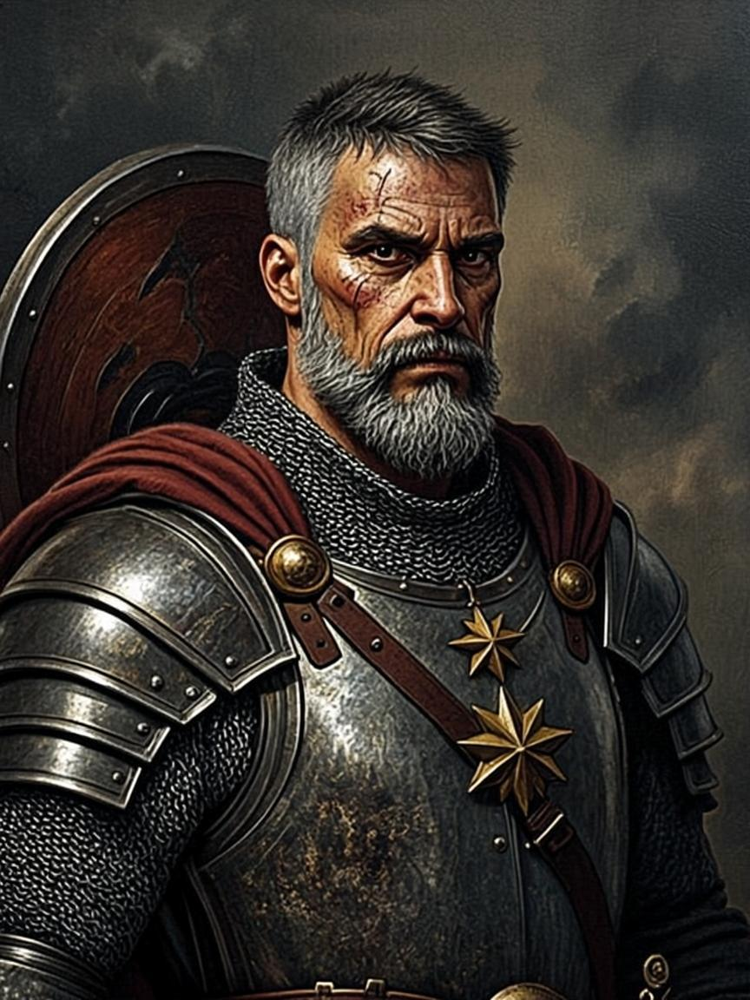
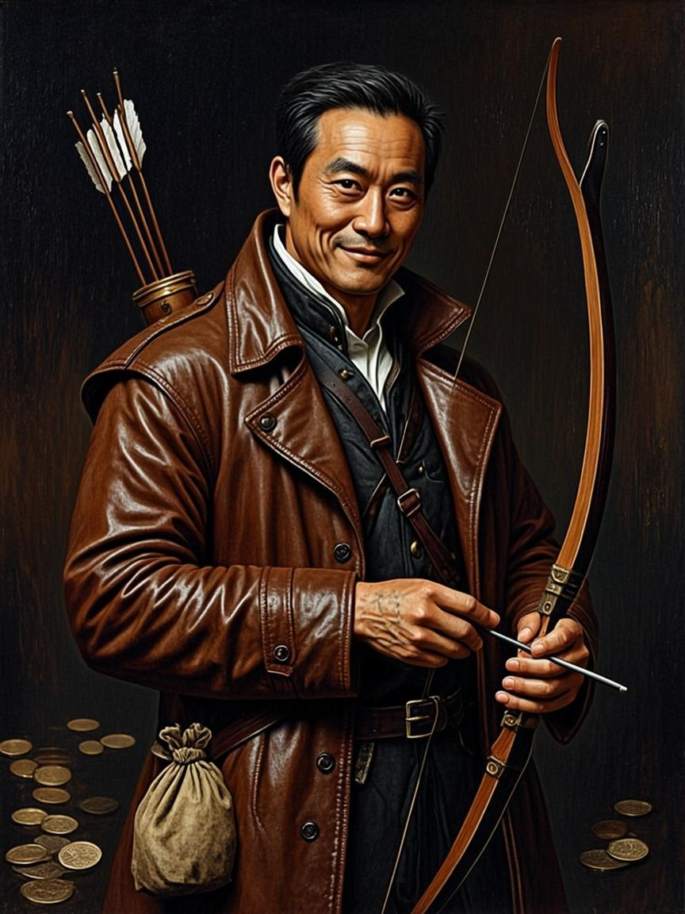

ВАТАГА
Шесть, которые могут предать

Ратмир
Страж · линия обороны
«Уводит братьев, если ватагу жертвуют ради выгоды»

Василиса
Вещунья · жар-поддержка
«Уходит к вещим кругам при разгроме хранилища»

Гаврила
Стрелок · логистика
«Продаёт планы атамана за золото»

Ходата
Договорница · контроль
«Переходит к навьим дворам при резне навьев»

Одинец
Лучник · разведка
«Спроектированная ересь: отдельная ветка сюжета»

Милута
Певчий · летописец
«Клеветная летопись против атамана»
Память каждого — теги четырёх видов: честь · кровь · злато · вера. Теги двигают спутника по лестнице разрыва — от сомнения до „ночи ножей“.